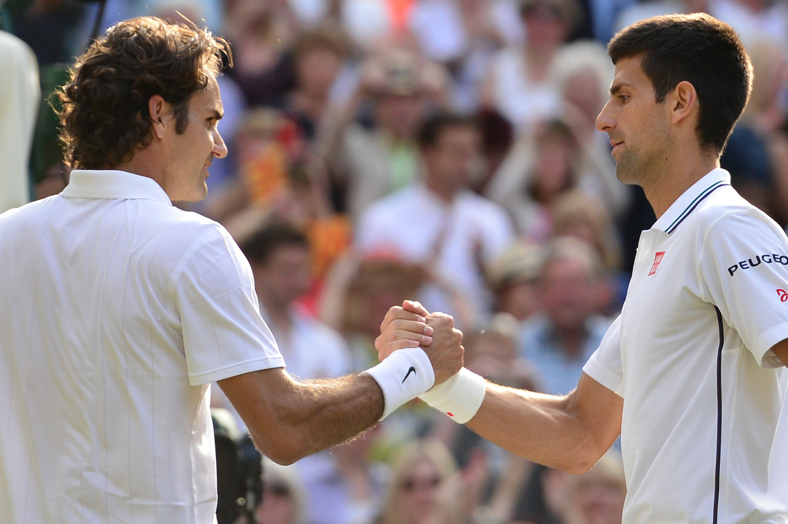

The zBET Manager System Operations
zBET is the complete betting process Artificial Intelligence Information Database System designed to make profits on Sports Betting without any human judgement intervention at all.
At present zBET is only used privately at SDLab 2020 for profit generation, analysing millions of match patterns, 24 hours a day, 7 days a week, so its electronic memory is ready with a decision for every conceivable bet situation. A feat impossible to attain at this level with just the Human Mind.
Later this year, zBET will be available to Members. Individuals then, even with a minimal knowledge of a sport, will take money back from one of the parasites of the internet, the Betting Agencies.
Without zBET, individuals not having BOTH a strict 'Bet Analysis Process' in conjunction with a 'Wager Control System', will find it impossible to make money, and keep making money. A fact Betting Agencies and those ludicrously absurd scam 'get rich quick' internet adverts rely and thrive on.
zBET will take over the SELECTION and SIZE of all Bets, apply its Mathematics, Research, and Artificial Intelligence, deciding emotionless and wisely, the correct wager for the situation, always with an eye on your long term growing profit.
All Membership Fees directly go to a Dog Rescue charity. Dogs without doubt being the most Faithful and True species to ever walk the Earth. Humans are not even close.
Core of the zBET Money Engine
MICROSOFT ACCESS is controlled by zBET at this point.
Each sport deemed by zBET to be viable has all its latest Betting Events and associated Statistics ported into the Relational Database Tables. The information is then filtered and digitalized into a DNA type structure which enables rapid large volume pattern analysis.
Regardless of the sporting event and statistic structure, all information is accurately represented digitally within the Relational Database Tables.
MICROSOFT SQL SERVER, under zBET control, then picks and chooses from the digitalized Sports Data based on preconceived pattern theories.
The choosing decisions are made by the Artificial Intelligence side of zBET as it ‘learns’ from the huge volumes of combinational digitalized sporting data. It may suspect a regular situation, follow it up, and then validate or disprove its deduced hypothesis? Millions of occurrences scanned for recognisable patterns that represent clues to a ‘future’ event!
Validated findings are kept and constantly reviewed and so an ‘electronic learning library’ is formed. Constantly evolving with every Betting Event upload. This learning library is the basis for making betting decisions. Impossible for a human being to replicate anywhere remotely near this clarity level.
zBET can then make a decision on every future event… Psychology 101…
‘Past Behaviour Dictates Future Behaviour’
BET SITUATIONS
Knowing and Acting
Part of zBET's success is because it knows what the current profit is, remembers a huge pattern memory for upcoming events, and only then then acts accordingly.
The zBET way IS the only way to continue growing your profits steadily and consistently. To prove everything, start with two betting balances of any comfortable test amount, use zBET side by side against your current system for a year, then compare the profits.
Later this year, zBET will be available to Members.
WIN Management
A win to zBET triggers multiple actions. The profit has risen, and proportionally so too can the wager size. The profit margin has risen, and proportionally so too can the event odds allowance increase for maximum financial growth. And most importantly that event is analysed with pattern analysis against the millions of other events to verify all known decision hypotheses are still correct.
zBET always makes strict logical decisions (emotion / betting is a guaranteed failure combination), never breaks rules (no gambling and never panics with desperate recoup strategies), and knows millions of situation patterns ‘specifically’ about the upcoming event.
Loss Management
A loss to zBET triggers multiple actions. All betting from this point is rescaled to just concentrate on getting the money back, like a system within a system. Allowed betting events are scaled to 'safer options' ensuring steady recovery, and when recovered, everything scales back to before it even happened.
The many internet sites that offer ‘free tips’, ‘fixed betting’, etc., are all scams! Free tips are doomed to fail because you still have to decide the wager amount which can destroy your savings in one hit when it doesn’t come through. And eventually it won't! Fixed betting is behind closed doors within a closed group. As if that would be published on the internet!
Betting Rounds
It’s all good and well to have software that picks a winner regularly, but it counts for nothing if the wager size is not managed as well.
This aspect when ignored (as it is on every site we have found on the web) will lead to financial loss as well because excluding fixed matches, of which you are not privy to, even an occasional loss will drain your profit! The betting agencies have factored in the seemingly successful gambler ‘many wins to few losses’ client ratio, on their slanted odds scale, to still make them lose! Covering it up with those absurd advertisements they have psychologically feigning friendship!?
zBET runs perfectly as we speak, steadily making profit day by day, rising not on a slow linear scale, but slightly exponentially. We could make zBET available to everyone now but for one thing…
zBET currently handles only one client, us at SDLab 2020. To support hundreds or thousands of clients the only options are to make thousands of simultaneous instances of zBET (not practical), or let people come on board mid-cycle (not feasible as every individual will have differing current profit so bet selection and wager control will not work). The solution, and reason zBET is not there for you now, is ‘ROUNDS’!
The 'Rounds' software update to zBET is currently our highest priority, and when completed, our Members will be able to fully use the zBET Betting Manager as well. Then new members will join ONLY at the commencement of each new round. A round being when your initial Round dollars have doubled in profit. Our test history average show that occurs approximately every month. zBET will be a 'Peoples Place' so all REAL statistics on profit success will be available at this site, along with every be selection ever made so anyone can verify the numbers. Membership will start from the first day of the Round so you don’t pay for ‘nothing time’.
Bet Notification and Specification
The instant a viable Bet has surfaced from the upcoming events, an email will be sent to you clearly specifying the Sport, Event, Match, and Wager ‘units’. At that point you contact your Betting Agency, highly recommended via an on-line service, and place the Bet.
You will never get a zBET email within one hour of match commencement as the situation of not making a bet on time we want to avoid. If that occurs, it just means you have to wait until the next Betting Round.
Because zBET will have international clients, using units for currency specification will make it not an issue. New Members when making their first ever zBET Bet, will decide on a safe starting dollar figure that will represent one unit. For example, if you started using zBET with $24 US, and zBET said to bet 0.44 units on a Match, you wager would be $10.56 US.
You must permanently stay with this units figure if you want zBET to correctly manage your betting otherwise zBET could give you potentially incorrect Betting Information!
If you are happy with your current profit and want to alter this figure, you just wait until the next round. Then if you read your profit analysis from zBET, you must note the round number you restarted and then the figures will be correct.
Master zBET Information Source
From the day zBET was created, the vital first step was for it to determine from every sport the most viable prediction surety events, and the ATP Men’s Tennis Tour was the winner. Because this information can help Members to win now, even before the release of zBET itself, we have made the information available as it has no influence on the confidentiality of our zBET software code.
All the tennis results are stored in the ultimate information system format, the ‘Relational Database’, ready for you to link into your own analysis system. Spreadsheet analysis, or even more prone to failure, human judgement, cannot compete with the power SQL processed answers provide. This information is fed to our SQL SERVER daily for comprehensive processing. And now, this detailed Mens Tennis data is available for you too! In Microsoft Access format.
The database tables are normalized professionally with zero information duplication and redundancy, and ready for your own research to make your bet selections go to a new level of success. zBET inserts every match and associated statistics all together in one place. Existing Men’s Tennis Result information available on the internet is so poor and simplified that professional analysis is impossible. These database tables change all that, taking your betting decision making to a new level… but when zBET Manager control is available, your betting success will then go to ultimate heights and profit...
Download ATP MENS TENNIS Microsoft Access Relational Database Detailed Match and Statistics Results
Controlled Betting
Once you are a Member, and you have just received a zBET email specifying the Sport, Event, Match, and Wager ‘units’, and placed that exact same bet via your Betting Agency, that is it! Nothing else to do but enjoy watching the Match win.
As discussed on the ‘Client Communication’ page, you must permanently stay with the units figure you selected on your first ever bet with zBET or when you decided you wanted to restart from a new round just as if you were a new Client Member again?
Do not waver from the stipulations here under any circumstance if you want zBET to correctly control the process and ensure steady profit growth. Emotion, Adrenalin, and Spontaneity LOSES MONEY in the Betting Industry! If you still want that side of things in your life, keep it separate from any zBET interaction! Circumstances such as per below MUST be avoided to prevent financial loss;
“Things are going well, zBET has turned $200 into $488, and I am so confident with zBET selecting my bets I am going to speed up the process! The next email zBET sends, I will double the units! I will only do it once.”
zBET alters its bet selections depending on circumstance (your current winnings and percentage of Round completion, bet loss recovery, player inconsistency versus gain, etc.). Any deviation from this control could affect your finances. If you want casual betting, that is fine but DO NOT use zBET as your match information source! Use your old systems and what you know for that.
zBET Information Correspondence
Macleod, Melbourne, Victoria, AUSTRALIA